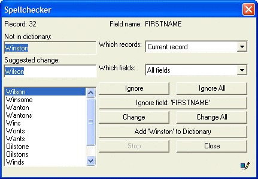

<OBJECT>.SPELL_CHECK()
Syntax
<OBJECT>.SPELL_CHECK( Scope as C [, Object as P ] )
|
Argument |
Description |
|
Scope |
The scope of the spell check operation. Valid values include:
|
Description
The <OBJECT>.SPELL_CHECK() method applies to:
Browses (for <OBJECT> use either the <BROWSE> pointer or the name of the browse)
Forms (for <OBJECT> use either the <FORM> pointer or the name of the form)
The <OBJECT>.SPELL_CHECK() method displays the object specified by <OBJECT> and the Spellchecker dialog box.
Limitations
Desktop applications only.
Example
The follow example displays the Spellchecker dialog box.

|
dim ptr as P ptr = form.load("Customer Information") ptr.Spell_Check("record") |
See Also
Form Functions and Methods, Browse Functions and Methods